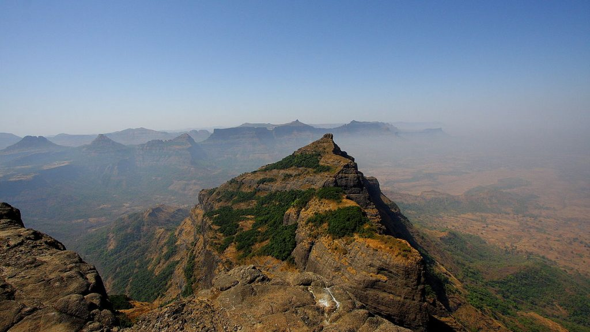
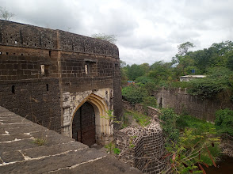
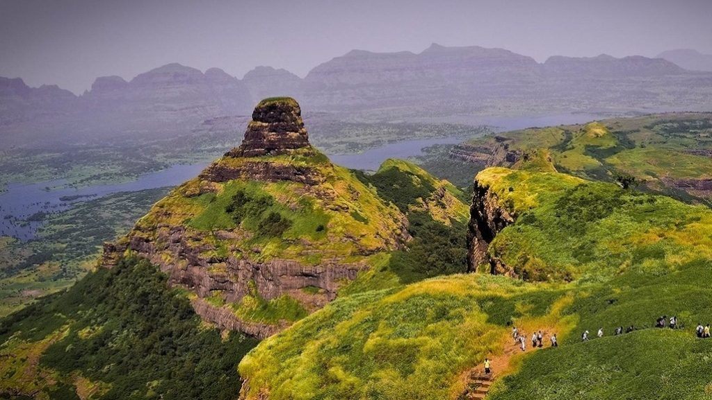

Tourist-Places
Harishchandragad:
Harishchandragad is a historical hill fort situated in Ahmednagar district of Maharashtra. The height of the fort is 1,424 meters.Harishchandragad is very popular place for trekking in Maharashtra and also one of the famous Bhandardara tourist places.

Randha Falls
Situated at a distance of 10 km from the Bhandardara Bus Stop, Randha Falls is one of the more mesmerising Ahmednagar tourist places. Formed over River Pravara, the water cascades down from a height of 170 feet and splashes down into a deep gorge below. The best time to watch this magnificent waterfall in its full glory is during the monsoon season.

Ahmednagar-Fort:
The Ahmednagar Fort is a fort located close to the Bhingar Nala near Ahmednagar in Maharashtra state western India. It was the headquarters of the Ahmednagar Sultanate. In 1803, it was taken by the British during the Second Anglo-Maratha War. It was used as a prison during the British rule.

Kapurbawdi Lake
Kapurbawdi Lake is one of the most tranquil tourist spots amongst Ahmednagar tourist places. This lake was built by Nizam Shah near Baneshwar Temple. The vast and picturesque lake is a perfect spot to relax with your friends or to enjoy a quiet and peaceful picnic.

Ratangad:
Ratangad is an ancient hill fort situated at Ratanwadi village in Ahilyanagar district of Maharashtra. Ratangad is very popular place for trekking in Maharashtra and also one of the famous Bhandardara tourist places.The fort is located at a height of 4250 feet. Ratangad Fort is 400 year old fort, which was used by Maratha warrior Shivaji Maharaj.

Back To Homepage